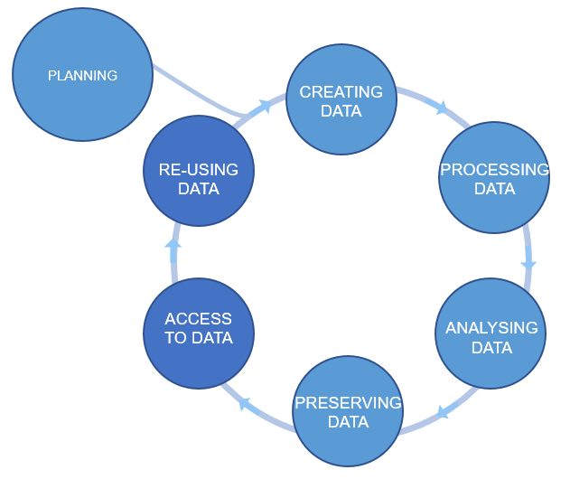

It's all about planning
Last updated on 2025-01-27 | Edit this page
Estimated time: 78 minutes
Overview
Questions
- What is the research data life cycle?
- How to plan for FAIR sharing?
- What is a Data Management Plan (DMP)?
Objectives
- Learn what actions can help in achieving FAIR.
- Learn to plan for different stages/steps of the data life cycle.
- Draft a simple DMP for your project.
(5 min teaching)
The research data life cycle
The Research Data Life Cycle is composed of a sequential series of stages/steps in which data is produced, processed and shared. The arrows between circles represent the transitions that occur in research as work is finished and passed onto the next stage/step. The re-use is the driving force of the cycle, because if you (or others) were not going to use the data you would not need to store it or even process it.
 Figure credits:
Tomasz Zieliński
Figure credits:
Tomasz Zieliński
Data management is a continuous process
Data management should be done throughout the duration of your project. If you wait till the end, it will take a massive effort on your side and will be more of a burden than a benefit.
There are many actions/steps which you can take during your research workflow which would make it easier to share your data in a Findable, Accessible, Interoperable and Reusable way, while, helping you in your day to day activities.
Exercise 1: Action plan challenge (7 min)
Where would you say the following actions belong in the Research Data Life Cycle? How do they help in achieving FAIR principles?
- clarify usage rights
- give credit through citations
- use open source software
- attach PIDs to your data
- attach descriptive metadata
- produce standardised metadata
- backup your data
- create figures and plots in python/R
- organize your files in folders
- select data repositories
- add open licence
- link publications, data and methods
- create a template for assay descriptions
- use institutional repositories
- use controlled vocabularies
- convert numerical data to csv
- track versions of files
- perform statistical analysis
- deposit datasets to Zenodo/Dryad
- record experiment details in an Electronic Lab Notebook
- use github for your code
- ask someone to revise your project structure
- reformat and clean data tables
- use a Minimal Information Standard
- use PID in data description
- download a dataset
- link to UniProt or GenBank records
Actually many of the above steps can be taken throughout the data life cycle.
(13 min teaching)
Plan ahead: data management plans (DMPs)
A good data management is about PLANning!
The (Data Management Plan) DMP’s purpose is to make you think about your data before you even start the experiments. It should show that you are thinking about what will happen with your data during and after the project. Which of the actions mentioned above you will take and how you will execute them. Finally, how your project is going to be FAIR.
Figure credits: Tomasz Zieliński and Andrés Romanowski
You should think about:
- How you will store the data
- How you will organize and describe your data
- How you will grant access to your data
- How you will share your data
- How you will preserve your data
- How others can use your data
- How much it will all cost
Most funders require a DMP with grant applications. Some institutions even ask their PhD students to prepare a DMP for their PhD project.
You should think about how you are going to manage your data (or outputs, in general) for each of your projects (or even individual assay types). For individual project the main focus should be on: what data will be produced, how will they be stored and organized, how you are going to describe them and track them. For example what file formats will be generated, how you are going to name your files, and how you will link it to your laboratory notes.
For grant applications, DMPs tend to be less technical, for example no need to discuss folder structures, but, they should emphasize the data safety (as preservation and access), data longevity, sharing, discovery and re-use.
DMP Online
DMP Online is a UK tool that is available via subscription to many UK Universities and Institutions. It contains DMP templates for the different funders requirements and information on how to fill each section. Whenever you need to write DMP for a grant application, check if this resource is available to you.
DMPTool is similar tool tailored to USA.
Additionally, your own Institutions may have resources to help with your DMP.
Authors of this course, have created ready to use paragraphs for writing DMPs and a list of recommended repositories at BioRDM wiki
Exercise 2: Challenge (30 min)
Working in pairs, think of your last paper (or project). Pretend that you have a joined project that combines the outputs of both your papers/projects.
Write a short DMP for this joined project.
Your DMP should contain the following three sections:
What data you will acquire during the project. Please describe the type of data you will generate (for example ‘flow cytometry data’) as well as file formats and data volume. These data will be stored under (include the meta data as well). Estimate the size of your data.
How you will store the data Please describe how you will store and organize your data, what metadata will you capture and in a what form. Tell how you will document the data during the duration of the project
How you will share the data Please describe the strategies for data sharing, licensing and access information.
Remember it is a joined project
An example DMP can look like:
- The project will generate a combination of qualitative and quantitative data derived from phenotyping, LC/MS metabolomics, and general molecular biology techniques.
The main data types and their formats are:
- Phenotyping images (tiff)
- Time-series / Numerical data (Excel)
- MS Metabolomics (mzML)
- processing scripts (Python, R)
The project will generate a total of 4 Tb data.
- The instrument specific raw data will be converted into the open formats mentioned above. Daily experimental work will be recorded using an electronic lab notebook (Benchling). We will use ISA templates from MetaboLights for MS data.
All research data will be stored using the University file system. This is a high quality storage with guaranteed backup. Scripts/codes will be stored under version control using GitHub.
- Metabolomics data will be made available through the MetaboLights (https://www.ebi.ac.uk/metabolights/) repository. The remaining datasets will be made available through Zenodo. The data will be released no later than a year after the project ends. All data will be made available under CC-BY and the code under MIT licensing.
Exercise 2, part 2: Explore each others DMPs (10 min)
Now, take a look at the other group’s DMP and make comments/suggestions on how to improve it (at the end of the DMP)
Exercise 3: Quiz (3 min)
Answer the following questions with true or false (T or F):
- The best time to do data management is at the end of a project, when you’ve collected all the data you’re managing.
- Data management plans (DMPs) detail what will happen to data before collection begins.
- The best storage method for data is multiple backups to USBs.
- There is a single best way to manage, organise, and share data.
- For grant applications, DMPs should mention data preservation, longevity, sharing, discover, and reuse.
- Your metadata should be standardised and descriptive.
- Taking the time to plan out what’s needed in metadata and your DMP will save you time in the long run and make your data more FAIR.
- DMP online is a tool which constructs DMPs for researchers.
- Data addressed in a DMP can be freely shared regardless of confidentiality.
- Data can be given creative commons licenses to dictate how others can and cannot use it.
- The best time to do data management is at the end of a project, when you’ve collected all the data you’re managing. (F)
- Data management plans (DMPs) detail what will happen to data before collection begins. (T)
- The best storage method for data is multiple backups to USBs. (F)
- There is a single best way to manage, organise, and share data. (F)
- For grant applications, DMPs should mention data preservation, longevity, sharing, discover, and reuse. (T)
- Your metadata should be standardised and descriptive. (T)
- Taking the time to plan out what’s needed in metadata and your DMP will save you time in the long run and make your data more FAIR. (T)
- DMP online is a tool which constructs DMPs for researchers. (F)
- Data addressed in a DMP can be freely shared regardless of confidentiality. (F)
- Data can be given creative commons licenses to dictate how others can and cannot use it. (T)
Attribution
Content of this episode was adapted after:
Key Points
- Data within a project undergo a set of steps known as the research data life cycle.
- Planning can help make your data FAIR.
- Data management is a continuous process during a project.
- A DMP is the best way to prepare for a new project.